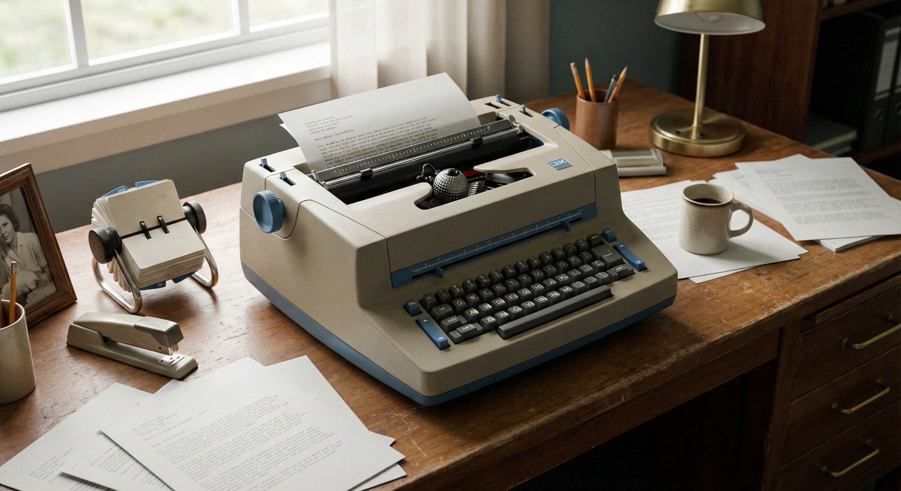

Rotating Typeball
The spherical printing element tilts and rotates to the correct character position in milliseconds.
The IBM Selectric Typewriter introduced a new era of precision and speed for office workers. Its rotating typeball mechanism eliminated jamming and delivered crisp, even lines on every page.
Special Launch Offer: Purchase now and receive one complimentary interchangeable type element.

The spherical printing element tilts and rotates to the correct character position in milliseconds.
Electromechanical controls ensure each character strikes at exactly the same vertical baseline.
Reduced noise compared to traditional typewriters, creating a calmer working atmosphere.
Secretaries and typists reported significant reductions in document preparation time due to the Selectric's smooth operation and consistent output.
The typeball ensures exact alignment and reduces mechanical errors. The result is professional-looking documents on every page.
Designed for continuous daily use, the Selectric can withstand long typing sessions with minimal maintenance and downtime.
Early adopters reported significant productivity gains across entire typing pools.
The typeball eliminated typebar collisions, dramatically reducing interruptions and keeping typists focused.
Smooth keystrokes and consistent print marks allowed typists to reach higher speeds with fewer errors.
Offices could standardize documentation with a single machine that supported multiple fonts and languages.
“Our typing pool completed daily reports nearly an hour faster after upgrading to the Selectric.”
Upgrade multiple desks at once and standardize on Selectric performance across your organization.